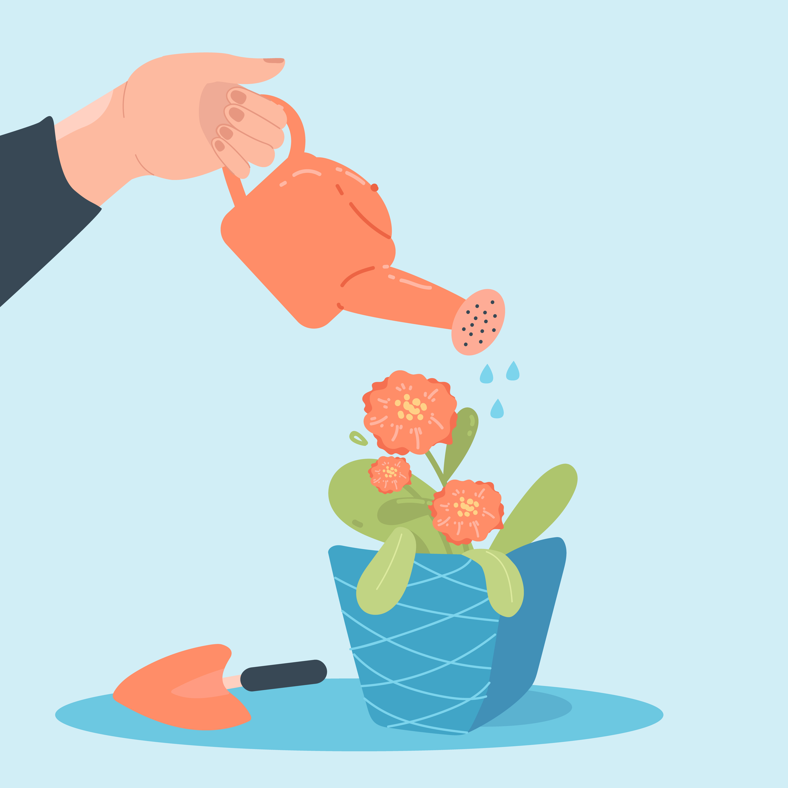

서비스 소개
식물도 처음이라면
물 주는 시기를 몰라도 초록달력이 알려드립니다.
이용 방법을 확인하고 필요한 식물의 물주기 알림을 신청해 보세요.

주요 기능
물주기 알림
식물마다 필요한 주기에 맞춰 잊지 않도록 푸시 및 이메일 알림을 보내드립니다.
식물 도감
우리 집 식물의 이름과 물주기 주기, 적정 일조량, 키우기 난이도 등 핵심 특징을 찾아봅니다.
성장 기록
사진과 간단한 메모로 반려식물이 자라나는 매일의 변화를 기록하고 모아봅니다.
이용 방법
- 키우는 식물을 등록합니다.
- 물주기 알림을 받습니다.
- 성장 기록을 남기고 확인합니다.
서비스 이용 설정
화면 테마
0 / 10
안내 확인 후 서비스를 시작할 수 있습니다.
물주기 알림 신청
1 / 3 · 식물 정보 입력
식물 정보 입력
식물 종류 선택
다육이와 선인장은 건조에 강하므로 흙이 완전히 마른 뒤에 물을 주어야 과습을 예방할 수 있습니다.
신청 내용 확인
입력하신 내용이 맞는지 확인해 주세요. 수정할 부분이 있다면 이전 단계로 돌아가 변경할 수 있습니다.
알림 신청이 완료되었습니다
내 반려식물 알림 목록
0개 관리 중등록된 식물의 물주기 일정을 확인하고, 물을 준 뒤 상태를 갱신하거나 알림을 관리할 수 있습니다.
등록된 반려식물 알림이 없습니다
위의 물주기 알림 신청을 통해 키우시는 식물을 등록해 보세요.
소식 받기
자주 확인하는 이메일을 입력하면 물주기 알림과 유용한 식물 팁을 보내드립니다.